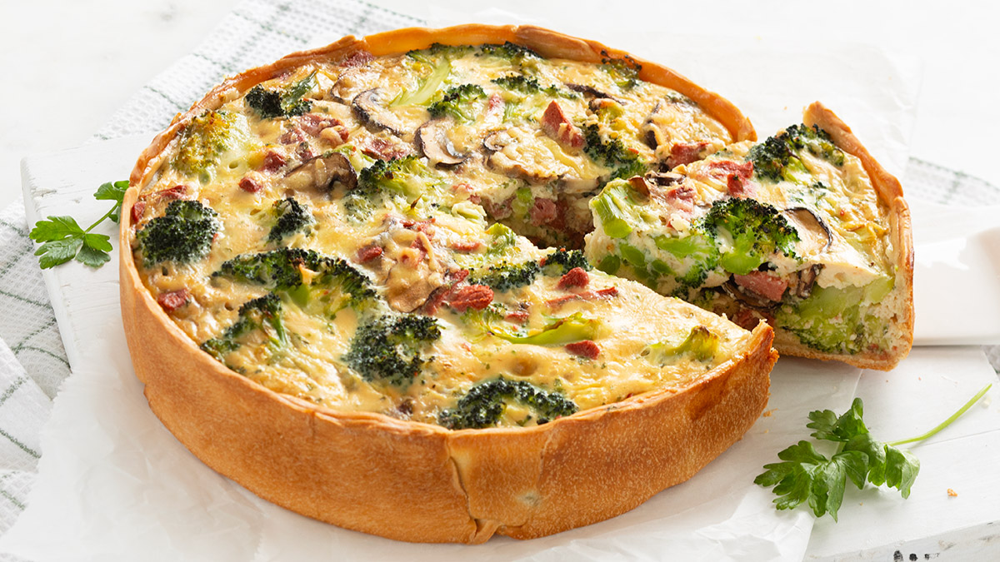

brocoli quiche

Ingredienten
- 5 plakjes hartig deeg
- 400 gr broccoli
- 250 ml room
- 5 eieren
- 1 handje geraspte kaas
- 250 gr champignons
- 160 gr spekjes ( vega ) (Garden Gourmet)
- 1 eetlepel paneermeel
- 1 theelepel gedroogde peterselie
- Peper en zout naar smaak
Bereiding
-
Verwarm de oven voor op 180 graden en bekleed een ingevette of bekleedde
quichevorm met de velletjes hartig deeg. Druk alle naden goed aan
elkaar. Prik met een vork gaatjes in de bodem en bestrooi met een beetje
paneermeel om te voorkomen dat de bodem te nat wordt.
-
Snijd de champignons in plakjes en bak ze samen met het spek (vega) in
een pan tot ze goudbruin zijn. Haal ze van het vuur en laat even
afkoelen.
-
Snijd de broccoli in kleine roosjes en blancheer ze kort in kokend
water. Giet af en laat goed uitlekken.
-
Snijd de broccoli in kleine roosjes en blancheer ze kort in kokend
water. Giet af en laat goed uitlekken.
-
Snijd de broccoli in kleine roosjes en blancheer ze kort in kokend
water. Giet af en laat goed uitlekken.
-
Snijd de broccoli in kleine roosjes en blancheer ze kort in kokend
water. Giet af en laat goed uitlekken.
-
Laat de quiche een paar minuten afkoelen voordat je hem aansnijdt. Dit
zorgt ervoor dat hij beter in stukken te verdelen is.
-
Bewaar de quiche in de koelkast en consumeer binnen 2 dagen. Je kunt de
quiche koud eten of even opwarmen in de oven of magnetron.